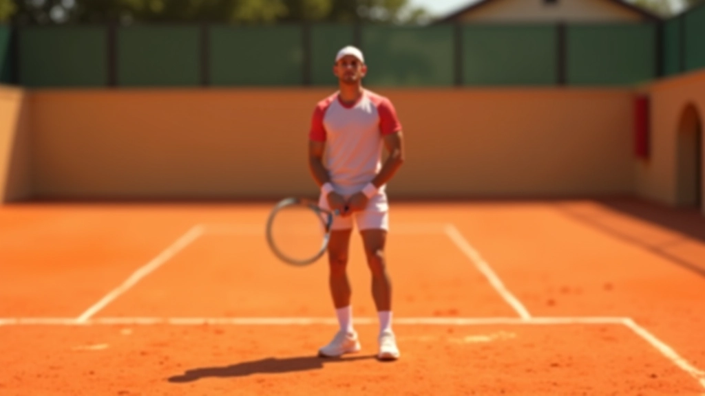
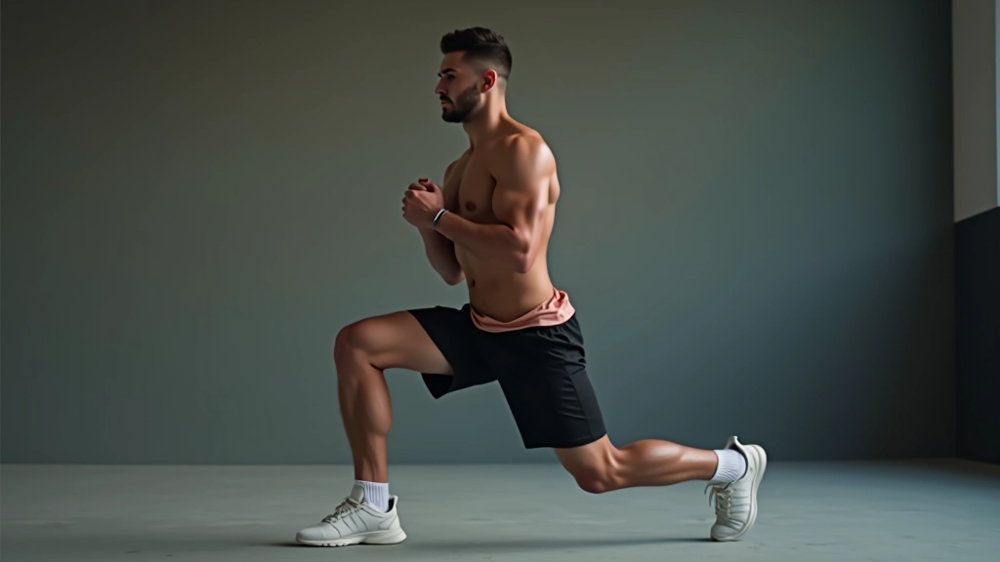
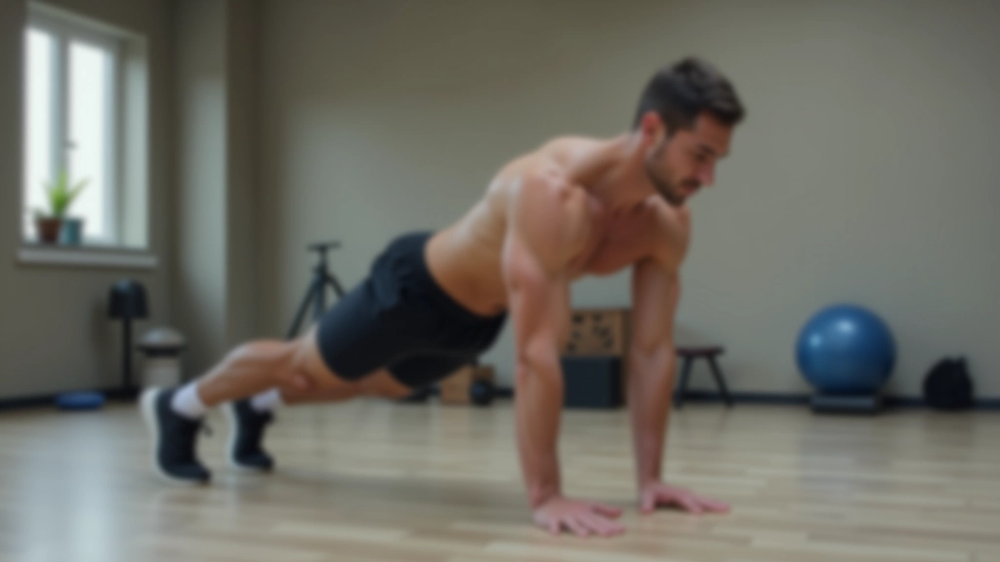
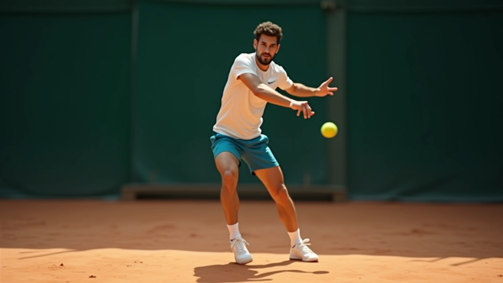

تمارين التوازن والثبات على الطين
برنامج تدريبي عملي يركز على تحسين توازنك والثبات أثناء الحركة السريعة على ملاعب الطين. تمارين مثبتة تستطيع تطبيقها في كل جلسة تدريب.

لماذا التوازن مهم على الطين
الطين ليس مثل الأسطح الأخرى. إنه يتطلب توازناً مختلفاً وثباتاً أكثر قوة. عندما تنزلق على الطين، يحتاج جسمك إلى التحكم الكامل في مركز ثقلك. بدون هذا التحكم، ستخسر القوة والدقة في ضرباتك. الخبر الجيد؟ يمكنك تحسين هذا بشكل كبير من خلال تمارين منتظمة.
التوازن الجيد يعني أيضاً حماية أفضل من الإصابات. عندما تكون مستقراً، تقل احتمالية التعثر أو الوقوع بشكل خاطئ. كل لاعب نراه يتحرك بثقة على الطين، قد قضى وقتاً في تطوير هذه المهارة الأساسية.

تمارين الثبات الأساسية
ابدأ بالأساسيات. تمارين الثبات تقوي العضلات حول كاحليك وركبتيك وفخذيك. هذه هي المناطق التي تحتاج الدعم الأكثر عندما تكون على الطين. لا تحتاج إلى معدات معقدة — فقط مساحة صغيرة وتركيز على الحركة الصحيحة.
جرب هذا: قف على ساق واحدة لمدة ٣٠ ثانية. احتفظ بالأخرى مرفوعة قليلاً أمامك. هذا يبدو سهلاً لكنه ليس كذلك في البداية. تحتاج إلى التركيز على عدم السقوط. كرر ذلك ١٠ مرات لكل ساق. إذا وجدت هذا صعباً جداً، يمكنك لمس الجدار بيدك للدعم.
تمرين آخر مفيد جداً: الاندفاع البطيء. خطوة للأمام، انحن ببطء حتى تصل ركبتك تقريباً إلى الأرض، ثم عد للأعلى. القصد هو الحركة المضبوطة، ليس السرعة. ثلاث مجموعات من ١٥ تكراراً لكل ساق تحدث فرقاً حقيقياً.

تمارين اللب والاستقرار
لا تستطيع تحسين توازنك على الطين إذا كان لبك ضعيفاً. اللب هو مركز قوتك — عضلات البطن والظهر والجانبين. عندما تنزلق، تحتاج إلى أن تكون هذه العضلات مشدودة وقوية.
تمرين البلانك يعمل بشكل رائع. استلقِ على بطنك، ادعم نفسك على ساعديك وأصابع قدميك. حافظ على جسمك مستقيماً تماماً — لا تدع وركيك ينخفضان. ابدأ بـ ٢٠ ثانية، وزد تدريجياً إلى دقيقة واحدة. افعل هذا ثلاث مرات أسبوعياً على الأقل.
تمرين آخر فعّال: الجلوس على كرة التوازن بينما تقذف كرة صغيرة من جانب إلى آخر. يجبرك هذا على الحفاظ على الثبات بينما تتحرك ذراعاك. إنه تحدٍ حقيقي، وستشعر بالفرق بعد بضعة أسابيع فقط.

تدريب التوازن الديناميكي
بعد إتقان التمارين الثابتة، حان الوقت للحركة. التوازن الديناميكي يعني الحفاظ على استقرارك بينما تتحرك بسرعة وتغير الاتجاه. هذا بالضبط ما تحتاجه على ملعب الطين.
جرب هذا التمرين: قف وأغمض عينيك لمدة ٣٠ ثانية. يجبرك هذا على الاعتماد على إحساسك بالتوازن بدلاً من نظرك. إنه أصعب مما تتخيل. افتح عينيك وانقر على قدميك بسرعة في مكانك لمدة دقيقة واحدة. ثم حاول الركض ببطء في خط مستقيم بينما تحتفظ بتركيزك على التوازن.
تمرين البطل الحقيقي: قف على ساق واحدة وارمِ كرة جدار أمامك وأمسكها وهي ترتد. هذا يتطلب توازناً وتنسيقاً في نفس الوقت. افعل هذا ١٢ مرة على كل ساق. تدريجياً، سيصبح هذا أسهل بكثير.

نصائح لتسريع النتائج
التناسق مهم جداً
ثلاث جلسات في الأسبوع أفضل من جلسة واحدة طويلة. جسمك يحتاج إلى ممارسة منتظمة ليتكيف مع هذه التمارين. اختر ثلاثة أيام والتزم بها.
احرص على حذائك
ارتد حذاءً مناسباً للطين بنعل جيد. هذا يحدث فرقاً كبيراً في استقرارك. الحذاء السيء يجعل التوازن أصعب بكثير.
راقب نفسك
سجل نفسك وهو تقوم بالتمارين. ستلاحظ أخطاء لم تكن لتراها وأنت تمارسها. هذا يساعدك على التحسن بشكل أسرع بكثير.
زيادة التحدي تدريجياً
عندما تصبح التمارين سهلة، أضف تحديات. مثلاً، قم بالبلانك مع رفع ذراع واحدة. أو قف على سطح غير مستقر.
التغذية والنوم
عضلاتك تنمو عندما تنام وتتعافى. تأكد من حصولك على ٧-٨ ساعات نوم جيد كل ليلة. كل بشكل صحي أيضاً.
الاحماء والتبريد
لا تبدأ بقوة مباشرة. امش قليلاً أولاً ثم ابدأ التمارين. وفي النهاية، خذ دقيقتين للاسترخاء.

فريق ملعب الانزلاق التحريري
فريق التحرير
كتبه فريق ملعب الانزلاق التحريري، متخصصون في توفير إرشادات عملية وموثوقة عن تقنيات الانزلاق في التنس. كل مقال يعكس خبرة فعلية وفهماً عميقاً للرياضة.
الخطوة التالية
تحسين التوازن والثبات على الطين ليس سراً. إنه يتطلب عملاً منتظماً وتركيزاً على الحركة الصحيحة. ابدأ بالتمارين الأساسية التي وصفناها هنا. لا تتسرع. ركز على الجودة قبل الكمية. بعد أسبوعين إلى ثلاثة أسابيع، ستلاحظ تحسناً حقيقياً في طريقة حركتك على الملعب.
تذكر أن كل لاعب محترف بدأ من حيث أنت الآن. الفرق بيننا وبينهم هو التدريب المنتظم والالتزام. استمر في العمل، وستشعر بالثقة في حركاتك أكثر فأكثر. سيأتي اليوم الذي تنزلق فيه على الطين بسهولة وتركيز كامل.
إشعار تنويهي
المعلومات المقدمة هنا مخصصة للأغراض التعليمية فقط. هذا المحتوى يهدف إلى تقديم إرشادات عملية حول تمارين التوازن. قبل البدء بأي برنامج تمرين جديد، خاصة إذا كان لديك مشاكل صحية أو إصابات سابقة، يفضل استشارة مدرب مؤهل أو متخصص. كل شخص مختلف، والتمارين قد تحتاج إلى تعديل حسب احتياجاتك الشخصية. توقف فوراً إذا شعرت بألم حاد أثناء أي تمرين.
مقالات ذات صلة

اختيار الحذاء المناسب للملاعب الترابية
الحذاء المناسب هو أساس الانزلاق الآمن. نتعرف على المواصفات التي تبحث عنها والفرق...

خطوات الانزلاق الصحيحة: من البداية للاحتراف
شرح مفصل لكيفية تنفيذ الانزلاق بشكل آمن وفعال. تعلم الخطوات الأساسية والأخطاء ال...

تنفيذ الضربات أثناء الانزلاق
كيفية الحفاظ على قوة الضربة والدقة عندما تكون في حالة انزلاق. نصائح من المحترفين...